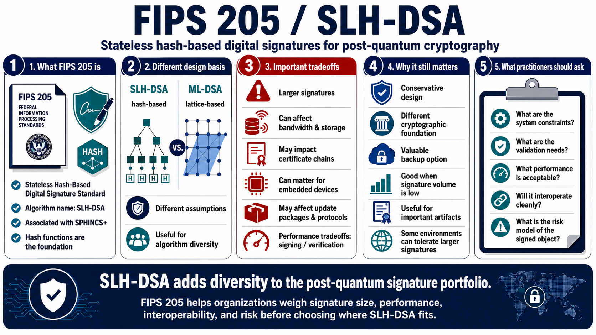

FIPS 205 and SLH-DSA
Connecting to LMS... Progress: in progress

Narration
FIPS 205 is the Stateless Hash-Based Digital Signature Standard. The standardized algorithm name is SLH-DSA, associated with SPHINCS+. At a high level, hash-based signatures use hash functions as their core foundation. That gives SLH-DSA a different design basis from lattice-based signature schemes such as ML-DSA, which can be valuable for algorithm diversity.
SLH-DSA is not necessarily the default answer for every signature use case. It has tradeoffs involving signature size and performance. Larger signatures can affect bandwidth, storage, certificate chains, embedded devices, update packages, and protocols that were designed around smaller classical signatures. Slower signing or verification may matter in systems that process large volumes of signatures.
Those tradeoffs do not make SLH-DSA unimportant. Conservative design and diversity can be valuable when organizations want a backup option based on different assumptions. Some use cases may tolerate larger signatures because the number of signatures is low, the artifacts are important, or the operational environment values a different cryptographic foundation.
Security practitioners should understand SLH-DSA as part of the standards portfolio. It helps answer the question, what if we do not want every signature migration to depend on one mathematical family? The right choice still depends on system constraints, validation needs, performance, interoperability, and the risk model behind the signed object.